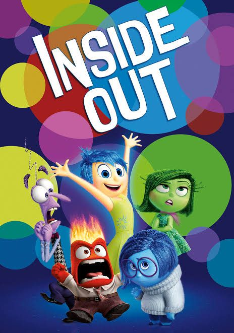
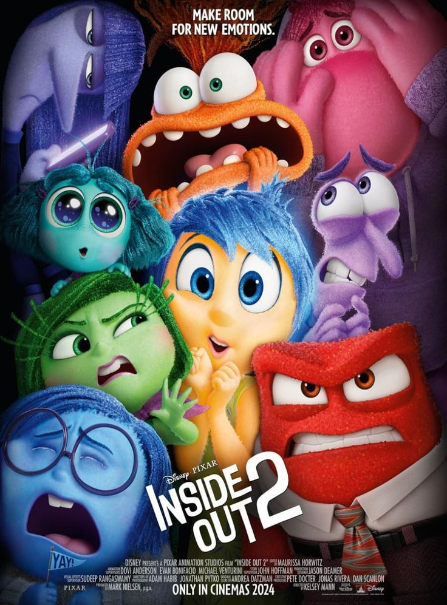
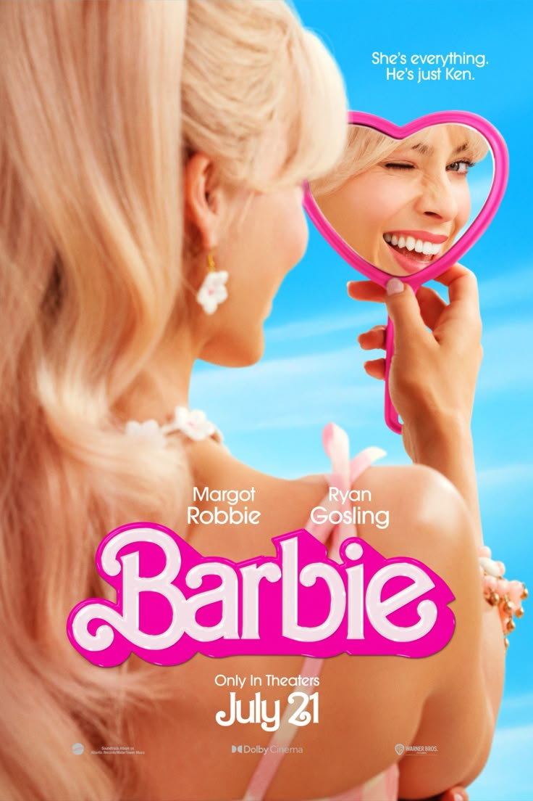
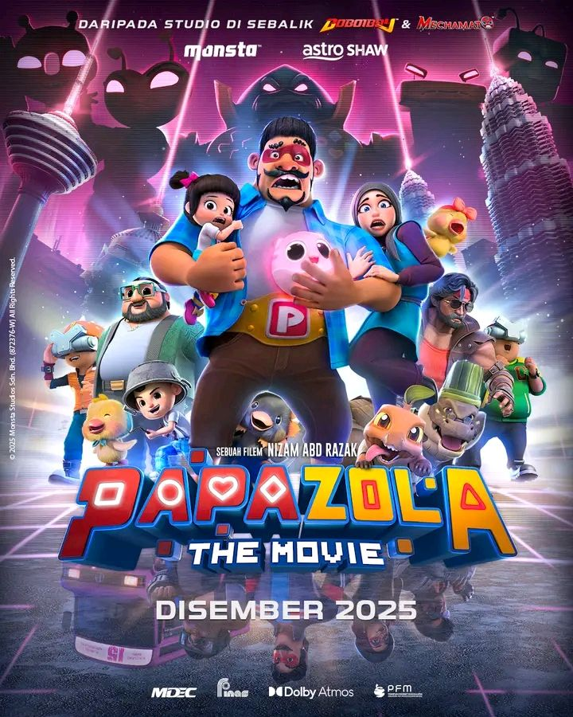

Welcome to STARVIEW

Inside Out
A must watch movie before watching the sequel. This movie dividing emotion into 5 character representative with Joy as the lead character.

Inside Out 2
This movie introduce 4 new emotions and anxiety as the highlight emotion. In this movie we are shown about Riley who can't control her anxiety and hurt not just people around her but herself emotionally.

Barbie
This is a movie about the stereotypical barbie doll whose going to human world. She met the mother who played her and fighting patriarchy while trying to find herself back.

Papa Zola: The Movie
This movie about a hero that try retire and stay on earth to provide for his family but then his daughter got kidnapped and it force him to get back to his role as a hero.